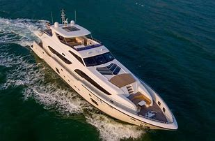

Our Mission
To minimize the loss of life, personal injury, property damage, and environmental impact associated with the use of recreational boats, through preventive means, in order to maximize safe use and enjoyment of U.S. Waterways by the public.
